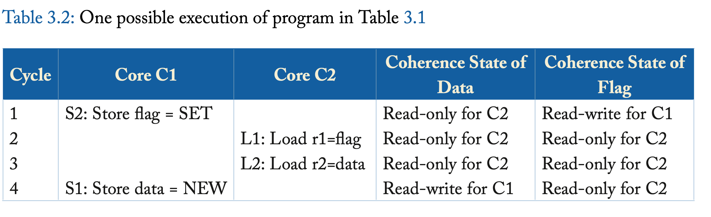
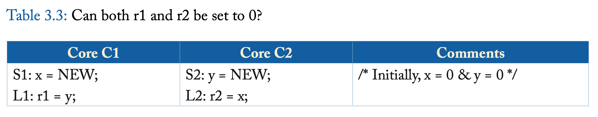
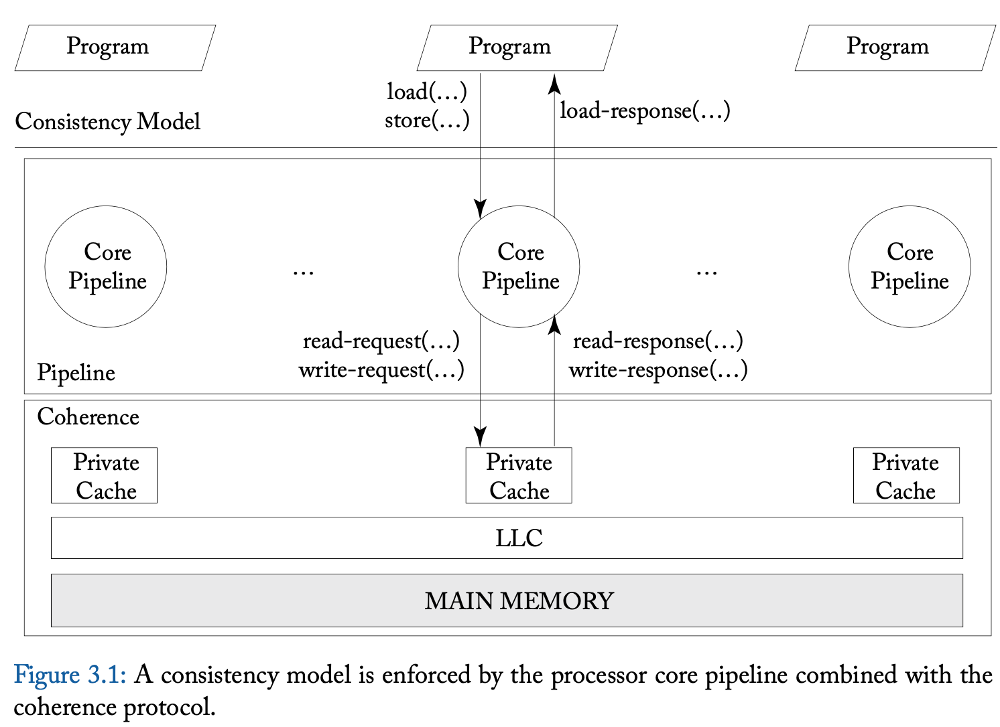
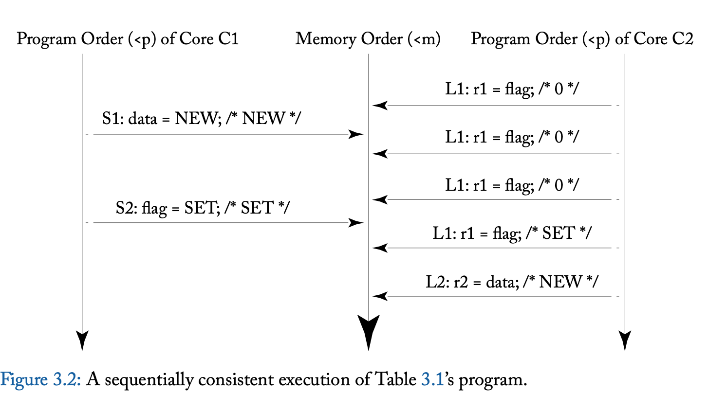

Memory Consistency Motivation And Sequential Consistency
This chapter delves into memory consistency models (a.k.a. memory models) that define the behavior of shared memory systems for programmers and implementors. These models define correctness so that programmers know what to expect and implementors know what to provide. We first motivate the need to define memory behavior (Section 3.1), say what a memory con- sistency model should do (Section 3.2), and compare and contrast consistency and coherence (Section 3.3).
We then explore the (relatively) intuitive model of sequential consistency (SC). SC is important because it is what many programmers expect of shared memory and provides a foun- dation for understanding the more relaxed (weak) memory consistency models presented in the next two chapters. We first present the basic idea of SC (Section 3.4) and present a formalism of it that we will also use in subsequent chapters (Section 3.5). We then discuss implementations of SC, starting with naive implementations that serve as operational models (Section 3.6), a basic implementation of SC with cache coherence (Section 3.7), more optimized implementa- tions of SC with cache coherence (Section 3.8), and the implementation of atomic operations (Section 3.9). We conclude our discussion of SC by providing a MIPS R10000 case study (Sec- tion 3.10) and pointing to some further reading (Section 3.11).
3.1 PROBLEMS WITH SHARED MEMORY BEHAVIOR
To see why shared memory behavior must be defined, consider the example execution of two cores1 depicted in Table 3.1. (This example, as is the case for all examples in this chapter, assumes that the initial values of all variables are zero.) Most programmers would expect that core C2’s register r2 should get the value NEW. Nevertheless, r2 can be 0 in some of today’s computer systems.
Hardware can make r2 get the value 0 by reordering core C1’s stores S1 and S2. Locally (i.e., if we look only at C1’s execution and do not consider interactions with other threads), this reordering seems correct because S1 and S2 access different addresses. The sidebar on page 18 describes a few of the ways in which hardware might reorder memory accesses, including these stores. Readers who are not hardware experts may wish to trust that such reordering can happen (e.g., with a write buffer that is not first-in–first-out).

With the reordering of S1 and S2, the execution order may be S2, L1, L2, S1, as illustrated in Table 3.2.
Sidebar: How a Core Might Reorder Memory Access
This sidebar describes a few of the ways in which modern cores may reorder memory accesses to different addresses. Those unfamiliar with these hardware concepts may wish to skip this on first reading. Modern cores may reorder many memory accesses, but it suffices to reason about reordering two memory operations. In most cases, we need to reason only about a core reordering two memory operations to two different addresses, as the sequential execution (i.e., von Neumann) model generally requires that operations to the same address execute in the original program order. We break the possible reorderings down into three cases based on whether the reordered memory operations are loads or stores.
Store-store reordering. Two stores may be reordered if a core has a non-FIFO write buffer that lets stores depart in a different order than the order in which they entered. This might occur if the first store misses in the cache while the second hits or if the second store can coalesce with an earlier store (i.e., before the first store). Note that these reorderings are possible even if the core executes all instructions in program order. Reordering stores to different memory addresses has no effect on a single-threaded execution. However, in the multithreaded example of Table 3.1, reordering Core C1’s stores allows Core C2 to see flag as SET before it sees the store to data. Note that the problem is not fixed even if the write buffer drains into a perfectly coherent memory hierarchy. Coherence will make all caches invisible, but the stores are already reordered.
Load-load reordering. Modern dynamically scheduled cores may execute instruc- tions out of program order. In the example of Table 3.1, Core C2 could execute loads L1 and L2 out of order. Considering only a single-threaded execution, this reordering seems safe because L1 and L2 are to different addresses. However, reordering Core C2’s loads behaves the same as reordering Core C1’s stores; if the memory references execute in the order L2, S1, S2, and L1, then r2 is assigned 0. This scenario is even more plausible if the branch statement B1 is elided, so no control dependence separates L1 and L2.
Load-store and store-load reordering. Out-of-order cores may also reorder loads and stores (to different addresses) from the same thread. Reordering an earlier load with a later store (a load-store reordering) can cause many incorrect behaviors, such as loading a value after releasing the lock that protects it (if the store is the unlock operation). The example in Table 3.3 illustrates the effect of reordering an earlier store with a later load (a store-load reordering) . Reordering Core C1’s accesses S1 and L1 and Core C2’s accesses S2 and L2 allows the counterintuitive result that both r1 and r2 are 0. Note that store-load reorderings may also arise due to local bypassing in the commonly implemented FIFO write buffer, even with a core that executes all instructions in program order.
A reader might assume that hardware should not permit some or all of these be- haviors, but without a better understanding of what behaviors are allowed, it is hard to determine a list of what hardware can and cannot do.

This execution satisfies coherence because the SWMR property is not violated, so inco- herence is not the underlying cause of this seemingly erroneous execution result.
Let us consider another important example inspired by Dekker’s Algorithm for ensuring mutual exclusion, as depicted in Table 3.3. After execution, what values are allowed in r1 and r2? Intuitively, one might expect that there are three possibilities:
(r1, r2) = (0, NEW) for execution S1, L1, S2, then L2 • (r1, r2) = (NEW, 0) for S2, L2, S1, and L1
(r1, r2) = (NEW, NEW), e.g., for S1, S2, L1, and L2
Surprisingly, most real hardware, e.g., x86 systems from Intel and AMD, also allows (r1, r2) = (0, 0) because it uses first-in–first-out (FIFO) write buffers to enhance performance. As with the example in Table 3.1, all of these executions satisfy cache coherence, even (r1, r2) = (0, 0).
Some readers might object to this example because it is non-deterministic (multiple out- comes are allowed) and may be a confusing programming idiom. However, in the first place, all current multiprocessors are non-deterministic by default; all architectures of which we are aware permit multiple possible interleavings of the executions of concurrent threads. The illusion of de- terminism is sometimes, but not always, created by software with appropriate synchronization idioms. Thus, we must consider non-determinism when defining shared memory behavior.
Furthermore, memory behavior is usually defined for all executions of all programs, even those that are incorrect or intentionally subtle (e.g., for non-blocking synchronization algo- rithms). In Chapter 5, however, we will see some high-level language models that allow some executions to have undefined behavior, e.g., executions of programs with data races.
WHAT IS A MEMORY CONSISTENCY MODEL?
The examples in the previous sub-section illustrate that shared memory behavior is subtle, giving value to precisely defining (a) what behaviors programmers can expect and (b) what optimiza- tions system implementors may use. A memory consistency model disambiguates these issues.
A memory consistency model, or, more simply, a memory model, is a specification of the al- lowed behavior of multithreaded programs executing with shared memory. For a multithreaded program executing with specific input data, it specifies what values dynamic loads may return. Unlike a single-threaded execution, multiple correct behaviors are usually allowed.
In general, a memory consistency model MC gives rules that partition executions into those obeying MC (MC executions) and those disobeying MC (non-MC executions) . This parti- tioning of executions, in turn, partitions implementations. An MC implementation is a system that permits only MC executions, while a non-MC implementation sometimes permits non-MC executions.
Finally, we have been vague regarding the level of programming. We begin by assuming that programs are executables in a hardware instruction set architecture, and we assume that memory accesses are to memory locations identified by physical addresses (i.e., we are not con- sidering the impact of virtual memory and address translation). In Chapter 5, we will discuss issues with high-level languages (HLLs). We will see then, for example, that a compiler allocat- ing a variable to a register can affect an HLL memory model in a manner similar to hardware reordering memory references.
3.3 CONSISTENCY VS. COHERENCE
Chapter 2 defined cache coherence with two invariants that we informally repeat here. The SWMR invariant ensures that at any time for a memory location with a given address, either (a) one core may write (and read) the address or (b) zero or more cores may only read it. The Data-Value Invariant ensures that updates to the memory location are passed correctly so that cached copies of the memory location always contain the most recent version.
It may seem that cache coherence defines shared memory behavior. It does not. As we can see from Figure 3.1, the coherence protocol simply provides the processor core pipeline an abstraction of a memory system. It alone cannot determine shared memory behavior; the pipeline matters, too. If, for example, the pipeline reorders and presents memory operations to the coherence protocol in an order contrary to program order—even if the coherence protocol does its job correctly— shared memory correctness may not ensue.

In summary:
Cache coherence does not equal memory consistency.
A memory consistency implementation can use cache coherence as a useful “black box.”
3.4 BASIC IDEA OF SEQUENTIAL CONSISTENCY (SC)
Arguably the most intuitive memory consistency model is SC. It was first formalized by Lam- port [12], who called a single processor (core) sequential if “the result of an execution is the same as if the operations had been executed in the order specified by the program.” He then called a multiprocessor sequentially consistent if “the result of any execution is the same as if the op- erations of all processors (cores) were executed in some sequential order, and the operations of each individual processor (core) appear in this sequence in the order specified by its program.” This total order of operations is called memory order. In SC, memory order respects each core’s program order, but other consistency models may permit memory orders that do not always respect the program orders.
Figure 3.2 depicts an execution of the example program from Table 3.1. The middle ver- tical downward arrow represents the memory order (<m) while each core’s downward arrow represents its program order (<p). We denote memory order using the operator <m, so op1 <m op2 implies that op1 precedes op2 in memory order. Similarly, we use the operator <p to de- note program order for a given core, so op1 <p op2 implies that op1 precedes op2 in that core’s program order. Under SC, memory order respects each core’s program order. “Respects” means that op1 <p op2 implies op1 <m op2. The values in comments (/* … */) give the value loaded or stored. This execution terminates with r2 being NEW. More generally, all executions of Ta- ble 3.1’s program terminate with r2 as NEW. The only non-determinism—how many times L1 loads flag as 0 before it loads the value SET once—is unimportant.

This example illustrates the value of SC. In Section 3.1, if you expected that r2 must be NEW, you were perhaps independently inventing SC, albeit less precisely than Lamport.
The value of SC is further revealed in Figure 3.3, which illustrates four executions of the program from Table 3.3. Figure 3.3a–c depict SC executions that correspond to the three intuitive outputs: (r1, r2) = (0, NEW), (NEW, 0), or (NEW, NEW). Note that Figure 3.3c depicts only one of the four possible SC executions that leads to (r1, r2) = (NEW, NEW); this execution is {S1, S2, L1, L2}, and the others are {S1, S2, L2, L1}, {S2, S1, L1, L2}, and {S2, S1, L2, L1} . Thus, across Figure 3.3a–c, there are six legal SC executions.
Figure 3.3d shows a non-SC execution corresponding to the output (r1, r2) = (0, 0). For this output, there is no way to create a memory order that respects program orders. Program order dictates that:
- S1<pL1
- S2<pL2
But memory order dictates that:
- L1<mS2(sor1is0)
- L2<mS1(sor2is0)
Honoring all these constraints results in a cycle, which is inconsistent with a total order. The extra arcs in Figure 3.3d illustrate the cycle.
We have just seen six SC executions and one non-SC execution. This can help us un- derstand SC implementations: an SC implementation must allow one or more of the first six executions, but cannot allow the seventh execution.